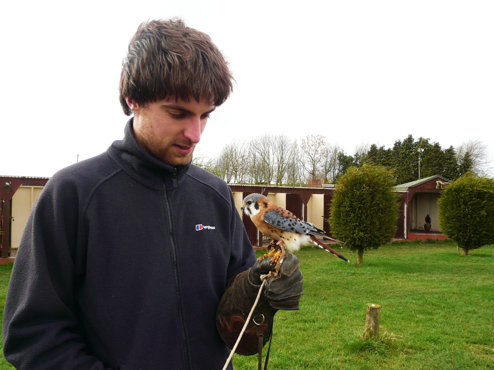

An American Kestrel (Falco sparverius) at a bird of prey handling session in Scotland .
Bio
I am a graduate student in the Igić lab at the University of Illinois at Chicago
My research questions involve the evolutionary ecology of Telluraves; a monophyletic clade comprising most extant species of birds. I am interested in how the ecology of the group has shaped the number of species we see today, how their ecology has changed over time, and how the ecology of the group can help estimate the age of the major groups of taxa. To address these questions, I use a combination of life history, molecular, and paleontological data.
Publications
Thomson, C E, Bayer, F, Cassinello, M, Crouch, N, Farrell, S, Heap, E, Mittell, E, Hadfield, J (Submitted manuscript) Selection on parental performance opposes selection for larger body size in a population of blue tits
Hadfield, J D, Heap, E A, Bayer, F, Mittell, E A, Crouch, N (2013) Intraclutch differences in egg characteristics mitigate the consequences of age-related hierarchies in a wild passerine, Evolution, 67 (9): 2688–2700
Hadfield, J D, Heap, E A, Bayer, F, Mittell, E A, Crouch, N (2013) Disentangling genetic and prenatal sources of familial resemblence across ontogeny in a wild passerine, Evolution, 67 (9): 2701–2713
Education
2012 - Present, PhD Student, University of Illinois, Chicago
2009 - 2010 MRes Ecology, Evolution & Conservation, Imperial College London
2006 - 2009 Bsc Honors Zoology, Cardiff University
Research Experience
April 2012 - June 2012 - Research Assistant, Oxford Univeristy
August 2011 - October 2011 - Visiting scholar, University of Missouri, St Louis
April 2011 - June 2011 - Research Assistant, Edinburgh Univeristy